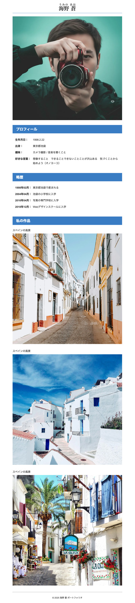
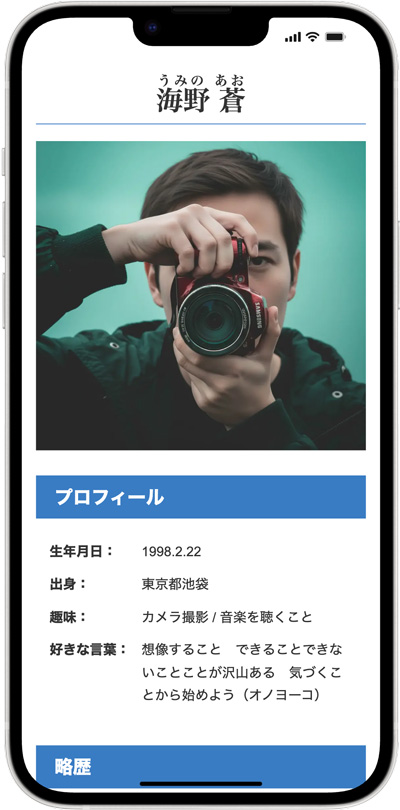

ポートフォリオ（架空）
- プロンプト例
ポートフォリオ（架空）の氏名を考えて -職業：カメラマン
■ 日本人風（リアル・信頼感重視） - 桐谷 颯真（きりたに そうま） – 現代的・爽やか - 神崎 亮（かんざき りょう） – クール・都会的 - 相原 悠人（あいはら ゆうと） – 優しい・ナチュラル - 黒川 恒一（くろかわ こういち） – 本格派・職人肌 - 橘 陽介（たちばな ようすけ） – 王道・安定感 ■ おしゃれ・アーティスト系 - 一色 光（いっしき ひかる） – 写真家らしい名前 - 蒼井 レン（あおい れん） – 中性的・スタイリッシュ - 朝霧 ソラ（あさぎり そら） – 世界観重視・作家性高め - 鳴海 ルカ（なるみ るか） – ファッション寄り ■ 海外風・グローバル展開向け - Ren Takahashi（レン・タカハシ） - Sora Hayami（ソラ・ハヤミ） - Kai Morita（カイ・モリタ） - Aoi Shimizu（アオイ・シミズ） ■ 個性派・記憶に残る - 光野 レイ（みつの れい） - 星野 トワ（ほしの とわ） - 月城 ハル（つきしろ はる）
テキスト
結局、AIの提案は不採用で自作の内容になりました。
海野 蒼うみの あお 海野 蒼の写真 プロフィール 生年月日： 1998.2.22 出身： 東京都池袋 趣味： カメラ撮影 / 音楽を聴くこと 好きな言葉： 想像すること できることできないことことが沢山ある 気づくことから始めよう（オノヨーコ） 略歴 1998年02月： 東京都池袋で産まれる 2004年04月： 池袋の小学校に入学 2016年04月： 写真の専門学校に入学 2018年12月： Webデザインスクールに入学 私の作品 スペインの風景 スペインの風景 スペインの風景 © 2026 海野 蒼 ポートフォリオ
ルビ
- ルビを振るために必要な要素
ruby要素
- ルビを振る文章の範囲を囲う親要素
rt要素
- 「Ruby Text」の略で、ルビテキスト（ふりがな）を指定するための要素
<ruby>海野 蒼<rt>うみの あお</rt></ruby>
完成例
- 自画像は、nano bananaで作成

記述例
【HTML】
<!DOCTYPE html> <html lang="ja"> <head> <meta charset="UTF-8"> <title>ポートフォリオ</title> <link rel="stylesheet" href="css/style.css"> </head> <body> <div class="container"> <!-- header --> <header class="header"> <h1><ruby>海野 蒼<rt>うみの あお</rt></ruby></h1> <img src="img/face.webp" alt="海野 蒼の写真"> </header> <!-- /header --> <!-- main--> <main class="main"> <section class="section_wrap"> <h2>プロフィール</h2> <dl> <dt>生年月日：</dt><dd>1998.2.22</dd> <dt>出身：</dt><dd>東京都池袋</dd> <dt>趣味：</dt><dd>カメラ撮影 / 音楽を聴くこと</dd> <dt>好きな言葉：</dt><dd>想像すること できることできないことことが沢山ある 気づくことから始めよう（オノヨーコ）</dd> </dl> </section> <section class="section_wrap"> <h2>略歴</h2> <dl> <dt>1998年02月：</dt><dd>東京都池袋で産まれる</dd> <dt>2004年04月：</dt><dd>池袋の小学校に入学</dd> <dt>2016年04月：</dt><dd>写真の専門学校に入学</dd> <dt>2018年12月：</dt><dd>Webデザインスクールに入学</dd> </dl> </section> <section class="section_wrap"> <h2>私の作品</h2> <ul> <li> <p>スペインの風景</p> <img src="img/photo01.webp" alt="スペインの風景"> </li> <li> <p>スペインの風景</p> <img src="img/photo02.webp" alt="スペインの風景"> </li> <li> <p>スペインの風景</p> <img src="img/photo03.webp" alt="スペインの風景"> </li> </ul> </section> </main> <!-- /main--> <!-- .footer --> <footer class="footer"> <p><small>© 2026 海野 蒼 ポートフォリオ</small></p> </footer> <!-- /.footer --> </div><!-- /.container --> </body> </html>
style.css
@charset "UTF-8"; /* ------------------------------------ reset ------------------------------------ */ * { box-sizing: border-box; margin: 0; padding: 0; } ul { list-style: none; } a { color: inherit; text-decoration: none; } img { max-width: 100%; vertical-align: bottom; } html { font-size: 100%; } /* ------------------------------------ body ------------------------------------ */ body { background-color: #ffffff; color: #333; font-size: 1.0rem; font-family: Arial, sans-serif; line-height: 1.7; } /* ------------------------------------ layout ------------------------------------ */ .container { width: 680px; margin: 0 auto; } /* ------------------------------------ header ------------------------------------ */ .header { margin-bottom: 30px; } .header h1 { margin: 20px 0; border-bottom: 1px solid #397cc3; font-family: serif; text-align: center; } /* ------------------------------------ section ------------------------------------ */ .section_wrap { margin-bottom: 40px; } .section_wrap h2 { margin-bottom: 20px; padding: 8px 0 6px 1.0em; background-color: #397cc3; color: #fff; font-size: 1.375rem; } .section_wrap dl { display: flex; flex-wrap: wrap; width: 100%; padding: 0 16px; } .section_wrap dt, .section_wrap dd { padding: 6px 0; } .section_wrap dt { width: 7em; font-weight: bold; } .section_wrap dd { width: calc(100% - 7em); } .section_wrap li { margin-bottom: 30px; } .section_wrap p { margin-bottom: 6px; } /* ------------------------------------ footer ------------------------------------ */ .footer { padding: 20px; border-top: 1px dotted #333; text-align: center; }
完成例
